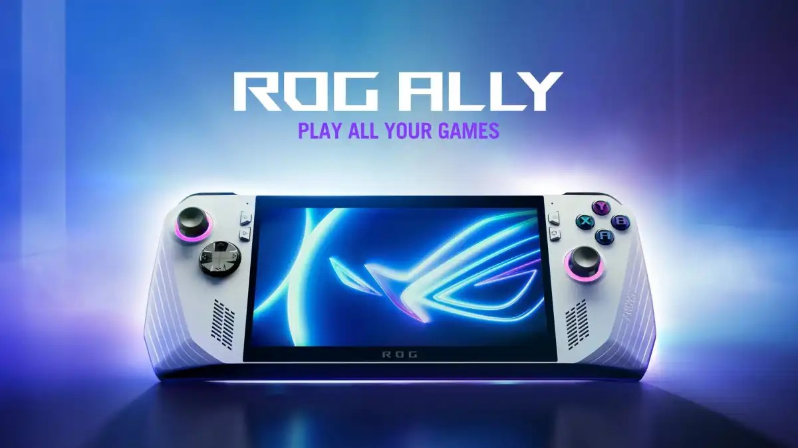
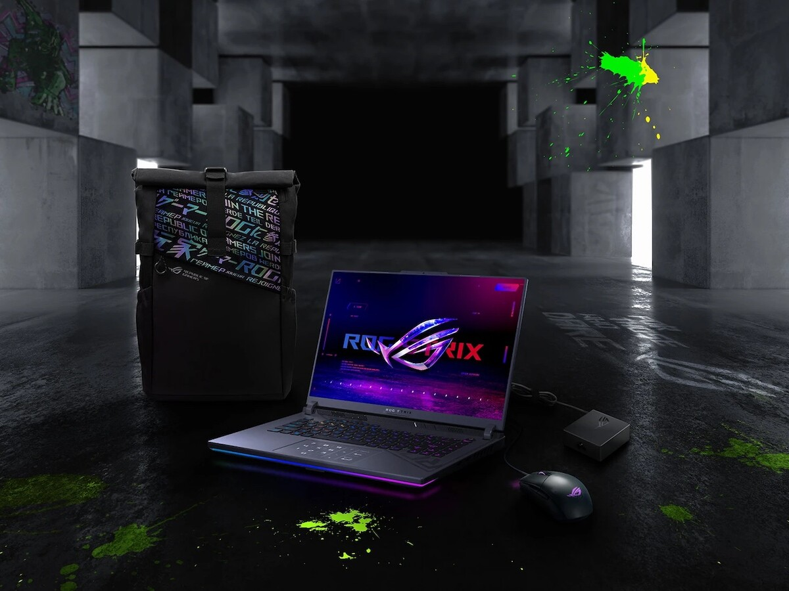
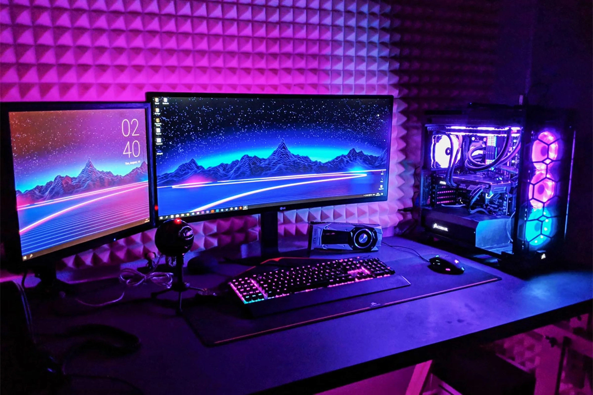

Computación
Computación
Destacado

Finalmente la espera ha acabado, nos llega el FSR 3.0
AMD en esta Gamescom 2023 nos presentó oficialmente la salida de su tecnología de escalado y optimización FidelityFX Super Resolution 3.0 o FSR 3.0 que además permitirá a muchas gráficas, no solo las de AMD, disfrutar...
Noticias

La nueva consola de ROG
La nueva consola de ROG
Asus nos presentó su alternativa con Windows a la Nintendo Switch, de parte de su división R.....
Nuevas ROG Strix
Asus es una de la lideres en portátiles y planea seguir siendo con su.....


Nuevos componentes Gaming